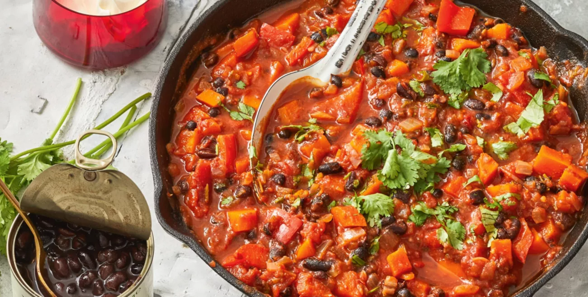

Black Bean Stew

Description
Black bean stew is a simple dish that can be made quite easily for a weeknight dinner as it needs
very little preparation and can be made quickly within the span of 40 minutes. The dish itself is
vegetarian and it consists of a nice mix of spicy and sweet flavours
Ingredients
- Black Beans(1 Can/400g)
- Diced Tomatoes(1 Can/400g)
- Onion
- Red Capsicum
- Carrots
- Garlic paste
- Cumin
- Paprika
- Chilli Flakes
- Olive Oil
Method
- Dice 1 large onion, 2 carrots, 1 Red Capsicum into small pieces
- Heat olive oil in a pan over medium heat
- Add the diced vegetables and 2 squeezes of the garlic paste into the pan
- Cook the vegetables until they began to get soft
- Add 3 tablespoons of cumin, 2 or more of paprika and 2 or more of chilli flakes into the pot
- Stir the vegetables and then add the can of black beans and diced tomatoes into the pot
- Add 1 cup of water or more to ensure a good consistency
- Bring the stew to a boil and then reduce the heat
- Leave the stew to simmer while stirring ocassionaly for 20 minutes or more depending on your preferred consistency
- Serve with rice and ideally a protein of your choice